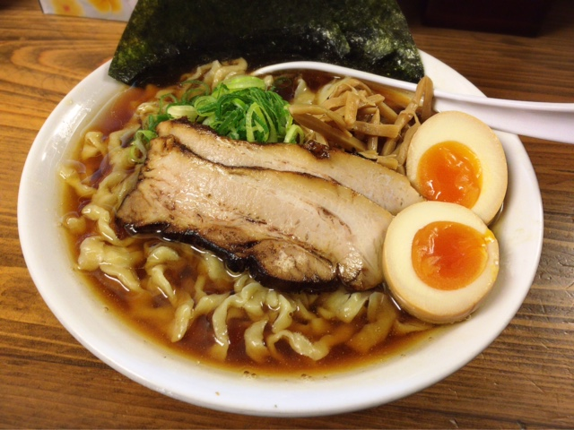
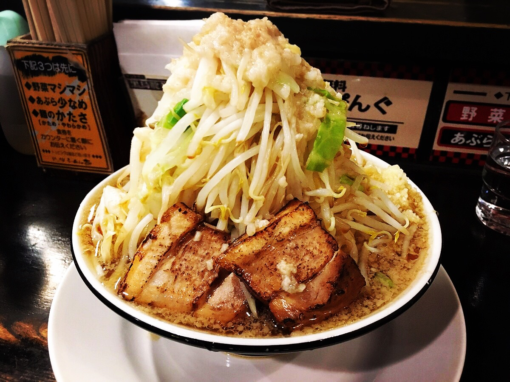

東小金井
| 一平ソバ | |
|---|---|
 |
一平ソバ 大 770yen麺がうまい、タレがうまい。 |
| くじら食堂 | |
|---|---|
|  | 特製醤油 950yen2015年のTRY新人賞を総取りしたお店。 |
| ラーメン大 東小金井店 | |
|---|---|
|  | らーめん 680yen二郎インスパイア。ヤサイマシカラメアブラニンニク。 |
| ラーメン 他力也 | |
|---|---|
 |
ラーメン 700yen府中にある二郎系「英二」からスタッフが独立して開いた店。 |
| 武蔵家 東小金井店 | |
|---|---|
 |
ラーメン 並 650yenまろやかクリーミー豚骨と中太ストレート麺がベストマッチ！ |
| 平右衛門 | |
|---|---|
 |
生醤油らーめん 700yen1番人気の「生醤油らーめん」が絶品です。 |